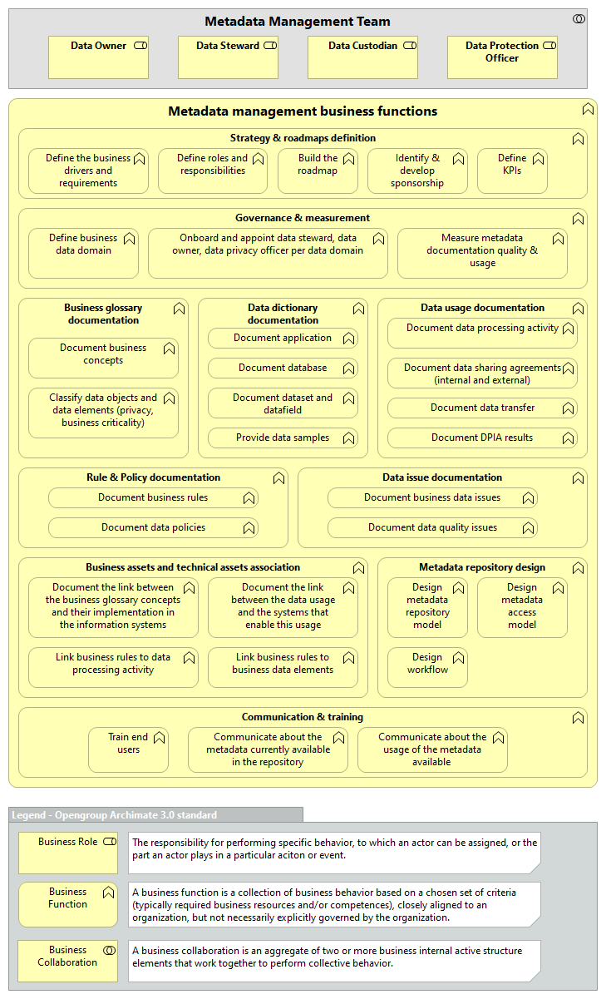
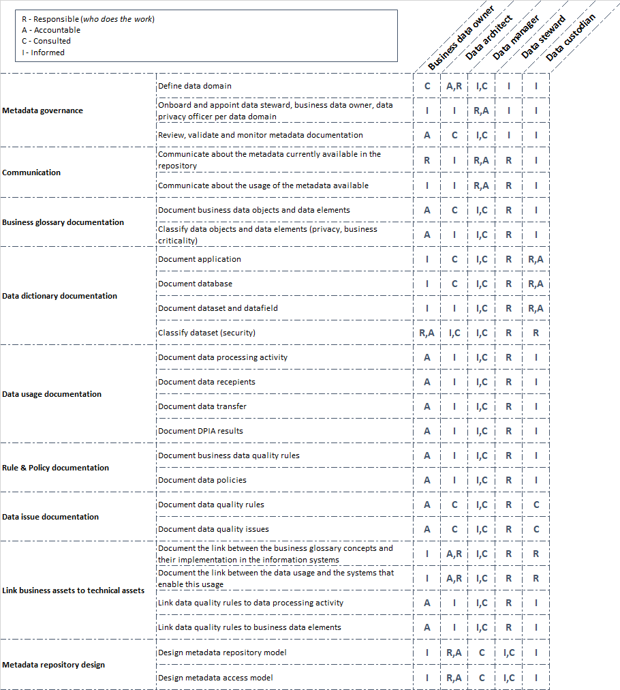
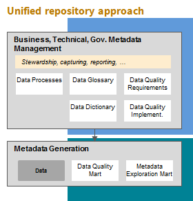

11 April 2023: Metadata Management Paper has been released by The Open Group as a TOGAF® Series Guide: The Open Group Metadata Management.
The concept of metadata is not new, albeit in the modern history it’s widely used in the information technology industry to define data about data. Long before the digital age, metadata such as author, title, number of tablets… were already used in the ancient time to catalog collection of clay tablets. As such, metadata provides additional information to better know and use the data.
At AXA, metadata management is recognized in AXA Business Capability Reference Model (BCRM) as an information management business capability and defined as follow: managing data that describes other data. It is often used in relation to Digital media, but older forms of metadata are catalogues, dictionaries, and taxonomies. Considering data as an asset, it means that we should increase our knowledge of this asset.
The importance of metadata management at AXA has been already emphasized through several assets such as the Group Target Architecture, the Data Maturity Assessment framework, the Data Management Activity Map… Therefore, the intent of this paper is to set in perspective the benefits of investing in metadata:
The primary audience of this paper is:
AXA customer first target along with our “Tech-led” ambition set data as key asset of our global transformation. CDOs are appointed to define locally data strategy to achieve our global ambition and raise our collective data maturity.
As part of this momentum it’s key for AXA to focus on foundational data management activities to build a solid ground for developing our future capabilities. As such metadata management as a practice of knowing better our data is directly linked to the data documentation activities.
Indeed metadata is key for the other activities such as data quality, data risk management, data architecture and even data governance.
Sadly, metadata is often poorly understood and usually viewed as an IT topic. In addition, the raise of NoSQL databases (relaxed data schemas) and the recent big data trend with the promise to unlock value from any kind of data, has led to focus solely on building the capabilities to collect, store and analyze the data. Very little effort was put on metadata which is often depicted as irrelevant or available automatically using machine learning tools. However:
Metadata is key from a business perspective to have a good knowledge and understanding of the data already available within the organization either at entity level or business unit level. Metadata enhances the data with additional information to make it more effective.
Below is an example of Excel sheet containing customer data:
Here are some examples of metadata that help the business team to effectively process these data:
| CUSTOMER FILE METADATA |
|---|
| Data classification. The data elements Surname, Birth Name, Given Name, Gender, Date of birth, Street Address, Postcode, Municipality, Country are personal data. Distribution to vendors/suppliers and publication on the Internet (e.g. newsgroups, forums, websites etc.) is not permitted unless explicitly allowed by the Business or Data Owner |
| Data processing activity. For car insurance policy renewal, Street Address, Postcode, Municipality, Country of the customer are used by the back office to send post letters. |
| Data Lineage. The source of the following data elements is the policy management system: Surname, Birth Name, Given Name, Gender, Date of birth. |
| Data Quality. The customer Foucaud Louis has moved to a new address. The address currently provided in the sheet is outdated for post mail contact. |
Compliance - A customer request on his “right to be forgotten” cannot be properly managed without collecting metadata such as
Operational efficiency - An operational process such as sending communications to the customer (ex. mails, emails, phone calls…) cannot be optimized and effectively managed without collecting metadata such as the accuracy of the customer address, email, phone numbers.
Data security - Business services (ex. quotation request, policy subscription, first notice of loss…) provided through APIs cannot implement proper security measures without knowing metadata such as data confidentiality, critical data assets are not identified so cannot be protected.
Data quality - Designing a data capture and assessment plan to measure customer data quality cannot be properly implemented without collecting metadata about the information lifecycle such as:
Data governance - The data management office (DMO) under the leadership of the CDO cannot effectively maintain data governance board(s) and ensure effectiveness of the data strategy without collecting metadata such as:
Data management - Only 2 activities (“Watch technology and regulatory changes” and “Identify and onboard business transformers”) out of 29 data management activities can be performed without collecting and managing metadata.
1- Whenever an entity has rated his maturity between two levels, it has been counted in the next level. Example: If an entity rates his maturity on the dimension 4.4.1 “What is the level of maturity of your business data documentation (business glossary and business processes)?” as 1.5 meaning between “No/Does not exist” and “Initial”, It will be counted in the level “Initial”
Data documentation is about knowledge management and people: more than tools, data documentation requires people (manual work), processes (prioritization, governance, data ownership), culture (data citizens).
Start small, prove the value first Identify the scope and keep focus (the question is not about doing or NOT doing but where to start?). The scoping can be achieved by prioritizing data objects and data elements relevant for a given business opportunity or context: see illustration below. Please refer to the AXA Data Quality Handbook for further information.
“The problem arises because different systems employ different definitions of key terms. Thus, the term “customer” can mean a potential buyer to the marketing department, the person who signed the purchase order to sales, and the legal entity that it bills to accounting." Thomas C. Redman
Identify metadata owners and source of truth to narrow down the documentation effort based on the relevant source of information and to ensure metadata ownership (like for data).
Document actively metadata as soon as the data is known to prevent retro documentation.
Linking metadata together is key to bring value. For instance, documenting a data element (ex. customer email) quality without the context of usage (link with data processing activities) make it hard to access the business impacts resulting from the lack of quality.
The lessons learnt from previous experiences have helped to identify common pattern followed to document metadata. This pattern can be summarized as follow:
Below are feedbacks from entities regarding the approach they have followed to document metadata:
A key lesson learnt from the entities experiences about the approach to follow when implementing a metadata management capability is to design the metadata management platform to scale from the first trigger.
Metadata are very often divided in three categories that can be summarized as follow based on the DMBOKv2:
AXA Data Management Community has defined the key assets that need to be documented to effectively perform data management activities, namely the data management information model. This is a first step to narrow down the metadata management effort and should be used as a starting point to identify key metadata to be documented:
It is important to engage into a step by step progressive approach to build the metadata documentation rather than attempt to document at the same time all the assets identify in the data management information model.
Start first with defining foundations such as:
Below are the key business functions that need to be implemented to support metadata management capability:

Below is a proposal of the roles and responsibilities in relation to these business functions:

Prior to select a metadata management tool, one should consider first to identify the key components of a metadata management application in relation to the assets that the entities should document.
These components can be summarized as follow:
Market solutions are very often designed to manage a subset of these functions and can be divided in three main categories:
One of the key challenges about data documentation is to document the data lifecycle from its origin as well as the movements and transformations it has been through in the information systems. Data movement is the exchange of data between two systems or applications. Data transformations are the results of business rules applied to the data for a specific usage or processing activity. Therefore, metadata association is one way of achieving this challenge by linking:
Metadata association provides a first level of understanding of the data lifecycle to further support data lineage documentation:
In the previous sections we have described:
We will now explore common design concerns to provide some insights on HOW to translate these requirements into technical solutions aligned with the business drivers and objectives.
The metadata repository can be defined as a system that allows the collection, processing, management and distribution of the metadata assets. Such system should support the IT functions previously described.
A centralized repository means that all the business and technical metadata assets identified in the data management information model are managed within a single repository: business glossary, data standards, data usage documentation (processing activity, data transfers, data recipients, DPIA, business issues), the business rules, data dictionaries…
As opposed to this central approach, a dedicated system can be defined per logical group of assets. Example: a repository for business glossary, a repository for data dictionaries, a repository for data quality rules documentation and implementation…

| PROS | CONS | |
| Unified repository |
|
|
| Best of breed |
|
|
The adoption of unified repository vs best of breed approach depends on the maturity of the entity:
This section will provide some recommendations on WITH WHAT tool meaning provide a framework for tool selection that can be adapt to each entity context.
| Application Function | Requirement |
| Acquisition |
The metadata repository should allow at minimum the documentation of the following metadata assets:
|
| Governance |
|
| Reporting |
|
| Access management |
|
| Reference data management |
|
| Administration |
|
| Metadata exchange |
|
This section will provide some examples of non-functional requirements to consider also for the selection of the tool.
| Application behavior | Requirement |
| Multitenancy | Adapt roles and permissions and behaviors for a complex organization, e.g. to delegate administration rights for a specific scope of metadata. Support metadata portability and reversibility. |
| Usability | Optimal user experience for the intended population, for exemple integration of metadata services within user tools (widgets, plugins, etc.). |
| Flexibility | Add custom metadata atributes, extend and/or adapt the metadata data model. |
| Adaptability | The solution is able to adapt in case of metadata changes (e.g. database migration). | Auditability | Track modifications (creation, access, update, deletion) to provide third-party assurance about content integrity. | Interoperability | Ability to interoperate with other metadata management system, relying on standard metadata model. E.g.; OMG CWM, ODPI Egeria, etc. |
AXA references
[1] Data Management Activity Map
[3] AXA Fundamental architecture principles
External references
[1] Martin Fowler, Kent Beck, John Brant, William Opdyke, and Don Roberts (1999) Refactoring: Improving the Design of Existing Code. Addison-Wesley
[2] ISO/IEC 11179 Information technology - Metadata registries
[3] Object Management Group (OMG) - Common Warehouse Metamodel (CWM)
[4] Metadata: Shaping Knowledge from Antiquity to the Semantic Web - Richard Gartner
[5] DAMA Data Management Body of Knowledge (DMBOK) v2
[6] Object Management Group (OMG) - Data Catalog Vocabulary (DCAT)
[7] ODPi EGERIA Open Metadata Specifications
[8] Dataversity How to evaluate a data governance tool
7 July 2017: Initial published version